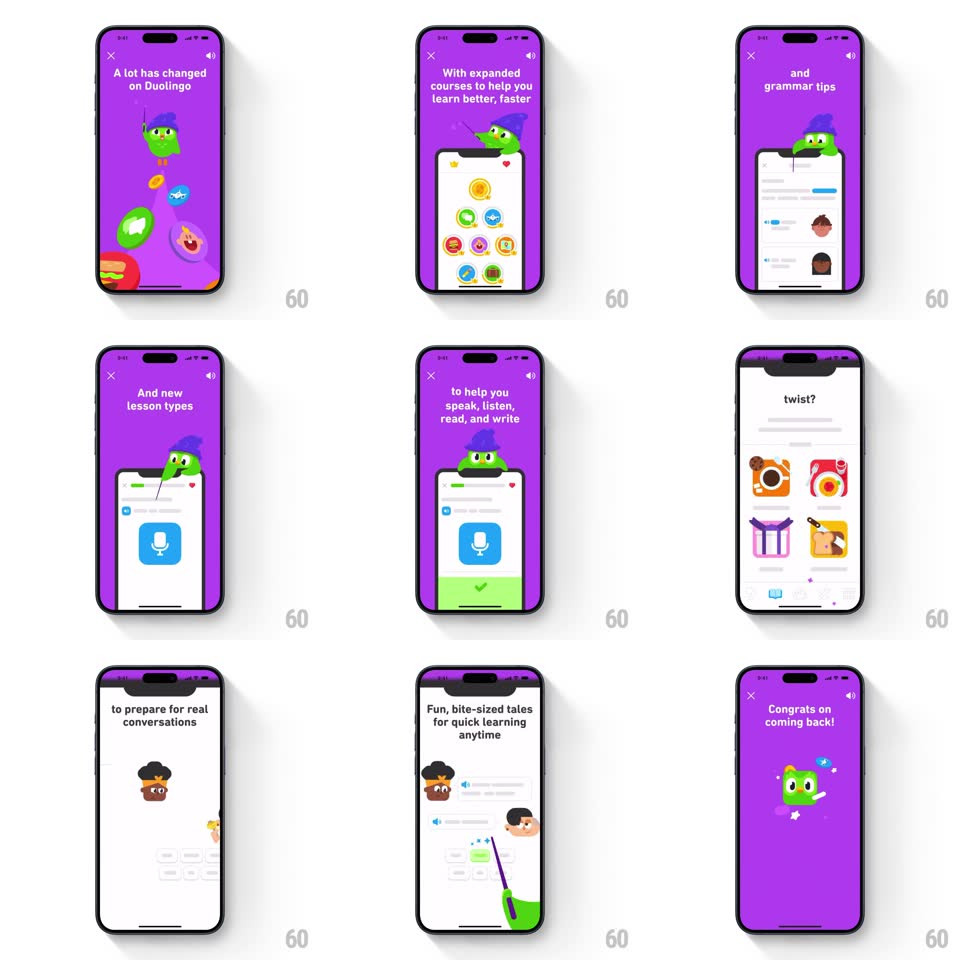

Media
Frame-by-frame

Rebuild this interaction 1:1: Duolingo's returning-user changelog - a mascot-driven story sequence: "Welcome back to learning!" over Duo, then paged cards on purple ("A lot has changed on Duolingo", "better, faster", "and grammar tips", "to help you speak, listen, read, and write", "Ready for a plot twist?", "Fun, bite-sized tales for quick learning anytime") with Duo and friends acting out each beat, ending on "Congrats on coming back!" with orbiting icons.

Rebuild this interaction 1:1: Duolingo's returning-user changelog - a mascot-driven story sequence: "Welcome back to learning!" over Duo, then paged cards on purple ("A lot has changed on Duolingo", "better, faster", "and grammar tips", "to help you speak, listen, read, and write", "Ready for a plot twist?", "Fun, bite-sized tales for quick learning anytime") with Duo and friends acting out each beat, ending on "Congrats on coming back!" with orbiting icons.
## Integration
Integration: stack-agnostic spec - springs given as stiffness/damping, timed motions as duration + curve; map every value to your framework and animation library of choice.
## Scene
Story-style sequence: an orange intro card, then purple pages with a top headline, a central phone/illustration mock that Duo (in a wizard hat) and other characters interact with, close (x) top-left and a mute icon top-right. Finale: Duo surrounded by a swirling ring of feature icons.
## Motion spec
Pattern: auto-advancing story pages with character choreography.
- Intro: "Welcome back to learning!" wipes in over Duo peeking from the bottom (translateY spring ~320/20).
- Page turns: content slides up-and-out / in (like stories, ~350ms, ease-in-out); the headline types in word by word (~60ms per word).
- Per page, the illustration animates: icons pop into the phone mock (scale springs, staggered 100ms), Duo slides along the top edge of the mock, characters trade places.
- "Ready for a plot twist?": Duo swings in from the right edge (rotate + translate, spring ~280/18) hanging off the mock's side.
- Finale: feature icons orbit Duo on a circular path (~6s/rev) while "Congrats on coming back!" scales in (spring ~340/20).
## Calibration
- Headlines complete their type-in before the illustration motion starts - text leads, art follows.
- Purple is the constant; illustration accents change per page.
## Reduced motion
Pages crossfade (200ms); headlines appear complete; no orbiting.
## Don't miss
- The sequence is tappable (tap right = next page) but auto-advances after each page's animation completes.
- Duo's wizard hat persists across pages - it is the through-line costume.